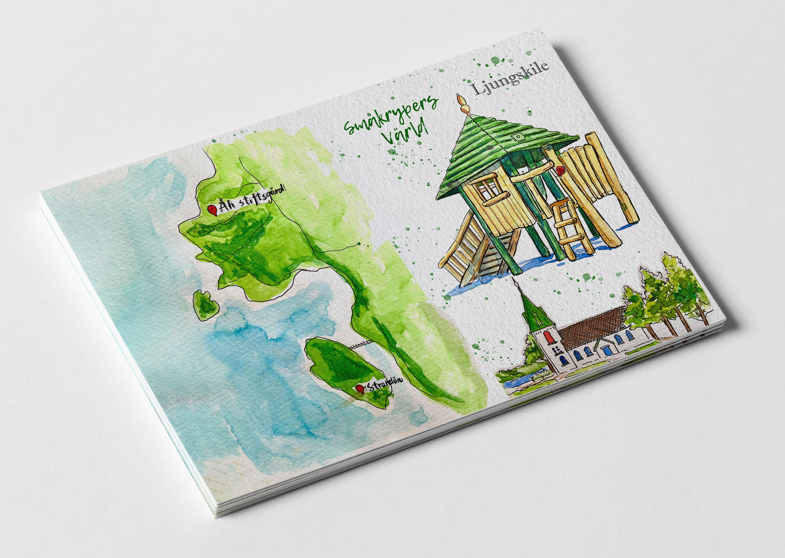

For me, design is the process of bringing ideas to life. During
the process, prioritize the empathy to truly listen, understand,
and address user’s pain points and challenges.

Project
Here are some of my projects that I have been working on the recent years.
Illustration
To reveal the world's beauty!
Watercolor painting is my specialty. I love to use the colors to highlight the beauty of the world in my own way.

Hand-painted Watercolor Art - Trollhättan

Hand-painted Watercolor Art - Landscapes
About me
I’m a digital designer student at Yrgo Göteborg with a passion for crafting user-centered experiences. For me, design is all about blending aesthetics and technology to solve problems in creative, empathic ways.
After many years in finance, I made a bold choice at 36: I took a leave from work to study design, following my true passion. Now, as I embark on this exciting new journey, I’m ready to explore fresh landscapes and push the boundaries of digital innovation.
I create my own reality. The best is now!